Silenciados por el Estado
Biografías de trabajo
Cada perfil presenta identidad, causa colectiva, forma de silenciamiento, responsabilidad estatal, salvedades y legado.
I
Género y derechos de las mujeres
Hermanas Mirabal Abrir perfil
República Dominicana · Patria, Minerva y María Teresa Mirabal · asesinadas el 25 de noviembre de 1960
Patria, Minerva y María Teresa Mirabal fueron activistas dominicanas vinculadas a la resistencia contra la dictadura de Rafael Leónidas Trujillo. La Casa Museo Hermanas Mirabal conserva su memoria como opositoras a la represión y al terror del régimen, y las fuentes oficiales dominicanas las reconocen como figuras de la lucha por la libertad y la democracia.
El 25 de noviembre de 1960 fueron asesinadas junto con su conductor, Rufino de la Cruz, cuando regresaban de visitar a sus esposos encarcelados. Fuentes oficiales dominicanas y de Naciones Unidas atribuyen el crimen a una orden de la dictadura de Trujillo.
Responsabilidad estatal: directa. La atribución al régimen de Trujillo está sostenida por fuentes oficiales dominicanas y por la documentación institucional de Naciones Unidas.
Legado: el 25 de noviembre fue reconocido por la Asamblea General de las Naciones Unidas como Día Internacional de la Eliminación de la Violencia contra la Mujer mediante la resolución A/RES/54/134.
Nota de verificación: Las fuentes oficiales dominicanas y de Naciones Unidas coinciden en que fueron asesinadas por orden de la dictadura de Rafael Trujillo. La resolución A/RES/54/134 documenta el legado internacional del 25 de noviembre.
Fuentes verificadas
- Dirección General de Museos de la República DominicanaCasa Museo Hermanas Mirabal (2026).Consultar fuente
- Naciones UnidasBackground: International Day for the Elimination of Violence against Women (2026).Consultar fuente
- Asamblea General de las Naciones UnidasA/RES/54/134. Día Internacional de la Eliminación de la Violencia contra la Mujer (1999).Consultar fuente
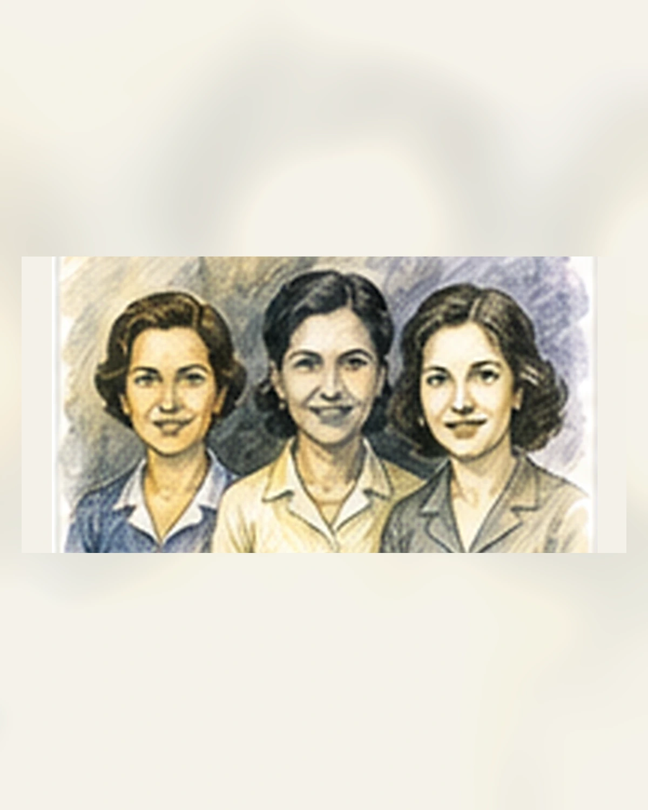
Sophie Scholl Abrir perfil
Alemania · 1921–1943
Estudiante de biología y filosofía en la Universidad de Múnich, Sophie Scholl integró junto a su hermano Hans y un pequeño grupo de compañeros la Rosa Blanca (Weiße Rose), una célula de resistencia no violenta contra el nazismo. El grupo redactó y distribuyó clandestinamente panfletos que denunciaban los crímenes del régimen y llamaban a la población alemana a resistir moralmente, en un país donde la disidencia significaba la muerte.
El 18 de febrero de 1943, Sophie y Hans fueron sorprendidos distribuyendo panfletos en la universidad. Fueron arrestados por la Gestapo, sometidos a un juicio sumario ante el Tribunal del Pueblo presidido por el juez Roland Freisler, y condenados a muerte. Sophie fue guillotinada el 22 de febrero de 1943, a los 21 años, apenas cuatro días después de su detención.
Responsabilidad estatal: directa. Sophie Scholl fue detenida por la Gestapo, condenada a muerte por el Tribunal del Pueblo y ejecutada el 22 de febrero de 1943.
Legado: es uno de los símbolos más luminosos de la resistencia civil alemana y de la objeción de conciencia frente al totalitarismo.
Nota de verificación: La detención, el juicio sumario y la ejecución están documentados por instituciones públicas de memoria histórica. Se corrige la fecha de ejecución a 22 de febrero de 1943.
Fuentes verificadas
- Bundeszentrale für politische BildungSophie Scholl und die Weiße Rose (2005).Consultar fuente
- United States Holocaust Memorial MuseumLa Rosa Blanca (2026).Consultar fuente
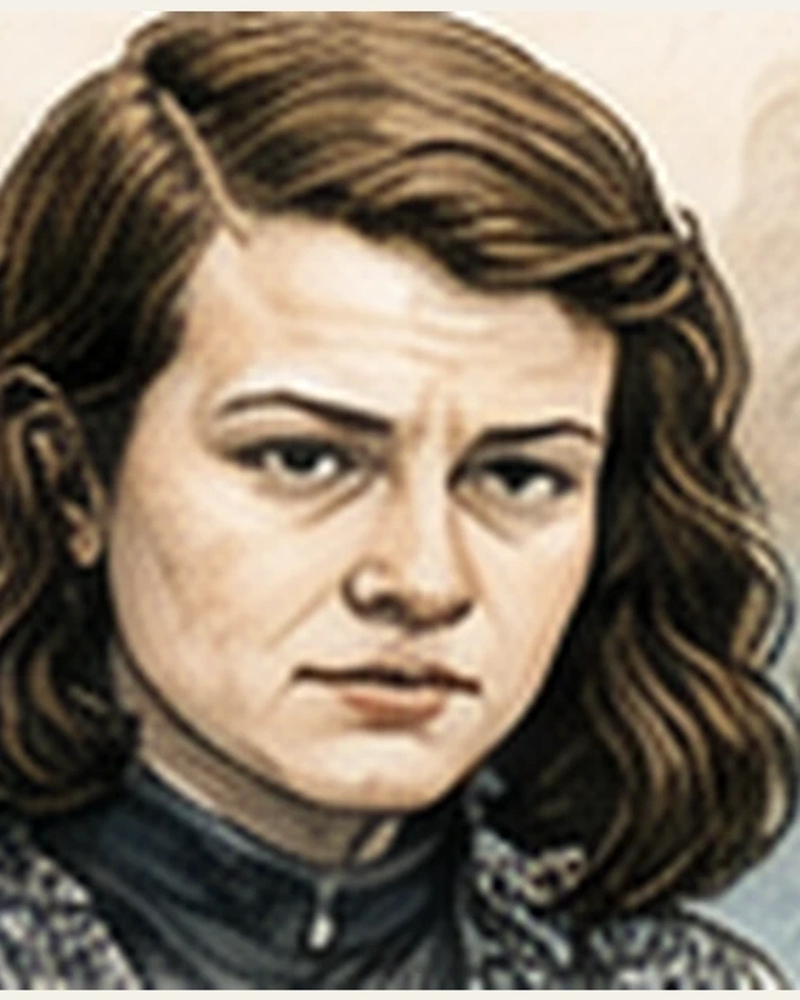
Ruth First Abrir perfil
Sudáfrica · 1925–1982 (doble eje: género + antiapartheid)
Periodista, académica e investigadora sudafricana, Ruth First fue una figura central del movimiento antiapartheid y del Congreso Nacional Africano (ANC). Como reportera documentó las condiciones de vida y explotación de la población negra bajo el apartheid, y como intelectual analizó las estructuras del poder racial. Fue detenida sin cargos y mantenida en aislamiento durante 117 días bajo la legislación represiva del régimen, experiencia que relató en un libro fundamental.
Exiliada, continuó su trabajo académico y militante desde Mozambique, donde dirigía investigación en la Universidad Eduardo Mondlane. El 17 de agosto de 1982 abrió un sobre que contenía una carta bomba y murió en el acto.
Responsabilidad estatal: directa. La Comisión de Verdad y Reconciliación documentó que exintegrantes de la policía de seguridad sudafricana participaron en la carta bomba que mató a Ruth First y concedió amnistía a dos de ellos por su papel en el crimen.
Legado: símbolo de la intersección entre pensamiento crítico y militancia, y de las mujeres en la primera línea de la lucha antiapartheid.
Nota de verificación: La Comisión de Verdad y Reconciliación documentó las solicitudes de amnistía y concedió amnistía a Craig Williamson y Roger Raven por su participación en el asesinato.
Fuentes verificadas
- Truth and Reconciliation Commission of South AfricaAmnesty decision concerning the death of Ruth First (2000).Consultar fuente
- Truth and Reconciliation Commission of South AfricaAmnesty granted for role in murder of Ruth First (2000).Consultar fuente
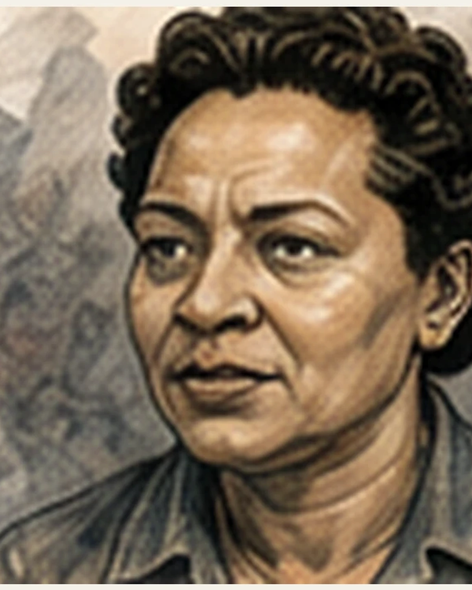
Zahra Kazemi Abrir perfil
Irán · 1948–2003
Fotoperiodista con doble nacionalidad iraní y canadiense, Zahra Kazemi había cubierto conflictos y crisis humanitarias en varios países. En junio de 2003 fue detenida frente a la prisión de Evín, en Teherán, mientras fotografiaba a familiares de presos políticos que se manifestaban a las puertas del penal.
Estuvo dieciocho días bajo custodia estatal, sometida a interrogatorios y malos tratos. Murió el 10 de julio de 2003 a consecuencia de las lesiones —una fractura de cráneo por golpes—. Las autoridades intentaron primero atribuir la muerte a un derrame cerebral; un médico militar que examinó el cuerpo y luego se exilió reveló las señales de tortura, violación y golpes.
Responsabilidad estatal: muerte bajo custodia, con salvedad. Zahra Kazemi murió tras ser detenida por autoridades iraníes. Informes canadienses y parlamentarios documentaron lesiones traumáticas y deficiencias graves en la investigación, sin una condena penal firme.
Legado: su caso se convirtió en emblema de la represión contra la prensa y de la impunidad estatal en Irán.
Nota de verificación: Se mantiene la salvedad: la muerte bajo custodia y las lesiones graves están establecidas, pero el proceso iraní no produjo una condena firme y las autoridades disputaron aspectos de la causa.
Fuentes verificadas
- House of Commons of CanadaThe Death of Zahra Kazemi: Iran’s Failure to Uphold its International Obligations (2004).Consultar fuente
- Government of CanadaStatement on the anniversary of Zahra Kazemi’s death (2018).Consultar fuente
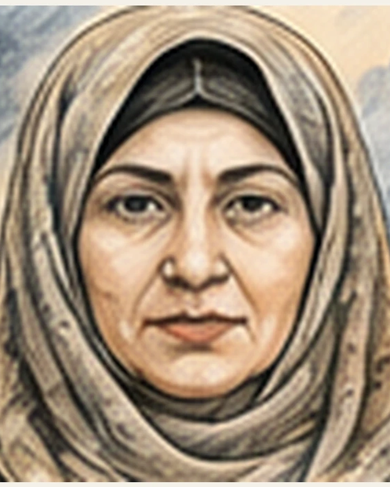
Berta Cáceres Abrir perfil
Honduras · 1971–2016 · derechos indígenas y defensa ambiental
Berta Cáceres fue una lideresa indígena lenca y cofundadora del Consejo Cívico de Organizaciones Populares e Indígenas de Honduras (COPINH). Defendió el territorio, los recursos naturales y los derechos del pueblo lenca, y denunció amenazas relacionadas con su trabajo.
Fue asesinada en su casa el 3 de marzo de 2016. La Comisión Interamericana de Derechos Humanos recordó que era beneficiaria de medidas cautelares y que había informado reiteradamente sobre el riesgo y el hostigamiento que enfrentaba.
Responsabilidad: la justicia hondureña condenó a siete coautores materiales y declaró culpable como coautor a Roberto David Castillo, entonces presidente ejecutivo de DESA. El GIEI Honduras concluyó en 2026 que el asesinato fue resultado de una operación criminal con vínculos entre actores empresariales, fuerzas de seguridad e instituciones del Estado, además de graves omisiones en la investigación. La cadena completa de responsabilidades no está cerrada.
Nota de verificación: No se usa la fórmula genérica 'responsabilidad estatal directa'. Las fuentes sostienen condenas contra autores y coautores, riesgos previamente denunciados, vínculos con fuerzas de seguridad e instituciones del Estado y graves omisiones investigativas. La cadena completa de responsabilidades sigue abierta.
Fuentes verificadas
- Comisión Interamericana de Derechos HumanosIACHR Condemns the Killing of Berta Cáceres in Honduras (2016).Consultar fuente
- Consejo de Derechos Humanos de las Naciones UnidasInformación sobre condenas en el caso Berta Cáceres (2021).Consultar fuente
- GIEI Honduras / Comisión Interamericana de Derechos HumanosSeguimiento al Informe del GIEI Honduras sobre el asesinato de Berta Cáceres (2026).Consultar fuente
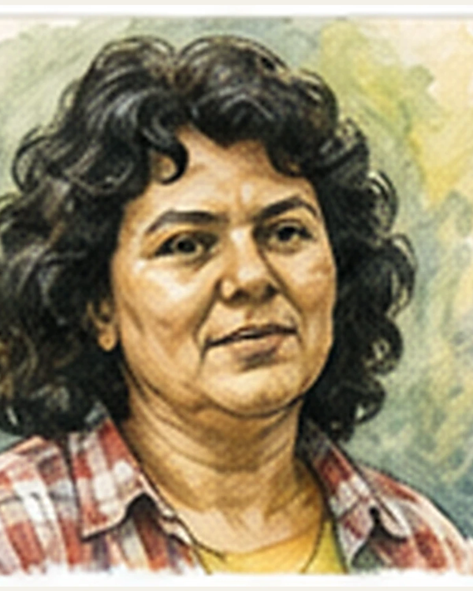
Lady Constance Lytton Abrir perfil
Reino Unido · 1869–1923
Aristócrata británica convertida en militante sufragista de la WSPU, Constance Lytton dio uno de los testimonios más lúcidos sobre la violencia estatal contra las mujeres que reclamaban el voto. Consciente de que su condición de noble le garantizaba un trato privilegiado en prisión, se disfrazó de costurera bajo el nombre de "Jane Warton" para demostrar que el Estado trataba con mucha más crueldad a las mujeres de clase baja.
Como "Jane Warton", ocultó su débil condición cardíaca y, tras declararse en huelga de hambre, fue sometida a alimentación forzada ocho veces —un procedimiento brutal en el que se ataba a la prisionera y se le introducía un tubo por la nariz o la garganta—. El daño fue irreversible: sufrió un derrame cerebral que la dejó parcialmente paralizada. Murió en 1923, con la salud quebrada por aquel trato.
Responsabilidad estatal: trato carcelario violento documentado. Lytton fue sometida a alimentación forzada durante una huelga de hambre. El deterioro posterior de su salud está ampliamente asociado a ese trato, aunque el nexo causal exacto con su muerte no fue establecido judicialmente.
Legado: su caso expuso tanto la violencia estatal contra las sufragistas como la desigualdad de clase en su aplicación.
Nota de verificación: La violencia carcelaria está documentada. Se evita presentar como certeza médica o judicial que la alimentación forzada fue la causa exclusiva de su muerte en 1923.
Fuentes verificadas
- The National Archives, Reino UnidoConstance Lytton and force-feeding (2026).Consultar fuente
- UK ParliamentForce-feeding of suffragist prisoners, Hansard (1910).Consultar fuente
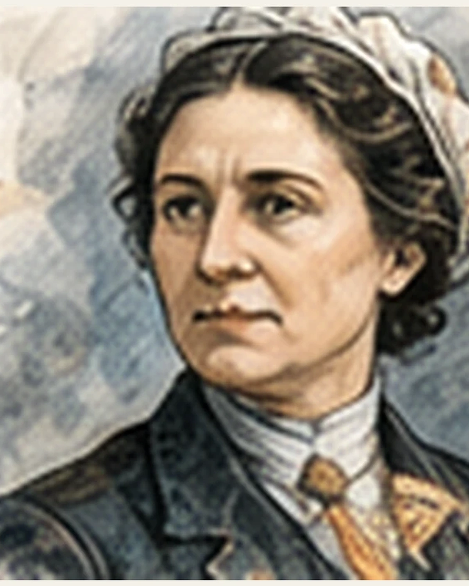
II
Diversidad sexual
Pierre Seel — y los "triángulos rosas" Abrir perfil
Alemania nazi / Francia · 1923–2005
Pierre Seel fue un joven alsaciano deportado por la Gestapo a los diecisiete años por ser homosexual, bajo el infame Párrafo 175 del código penal alemán, que criminalizaba la homosexualidad. En el campo de Schirmeck fue torturado y sometido a abusos, y fue testigo del asesinato de su primer amor. Sobrevivió, pero durante décadas cargó su experiencia en silencio, porque tras la guerra la homosexualidad seguía penada y las víctimas del triángulo rosa no fueron reconocidas como tales.
En 1994 rompió ese silencio publicando sus memorias, las únicas de un superviviente gay francés, convirtiéndose en activista por la memoria y el reconocimiento de las víctimas LGBTI del nazismo.
Responsabilidad estatal: persecución y tortura documentadas. Pierre Seel fue detenido por la Gestapo por homosexualidad, deportado al campo de Schirmeck y sometido a violencia bajo el aparato represivo nazi.
Nota de rigor: Seel sobrevivió y murió en 2005 de causas naturales; entra por la vía de tortura estatal documentada, no de muerte causada por el Estado. Funciona como figura ancla de una persecución que afectó a decenas de miles.
Legado: rostro de las víctimas LGBTI del nazismo, largamente invisibilizadas en la memoria histórica.
Nota de verificación: Se conserva con precisión que Pierre Seel sobrevivió y que su inclusión se debe a persecución y tortura estatal, no a muerte causada por el Estado.
Fuentes verificadas
- Ville de ParisHommage à Pierre Seel et aux victimes homosexuelles du nazisme (2019).Consultar fuente
- DILCRAH, République françaiseMémoire de la déportation pour motif d’homosexualité (2023).Consultar fuente
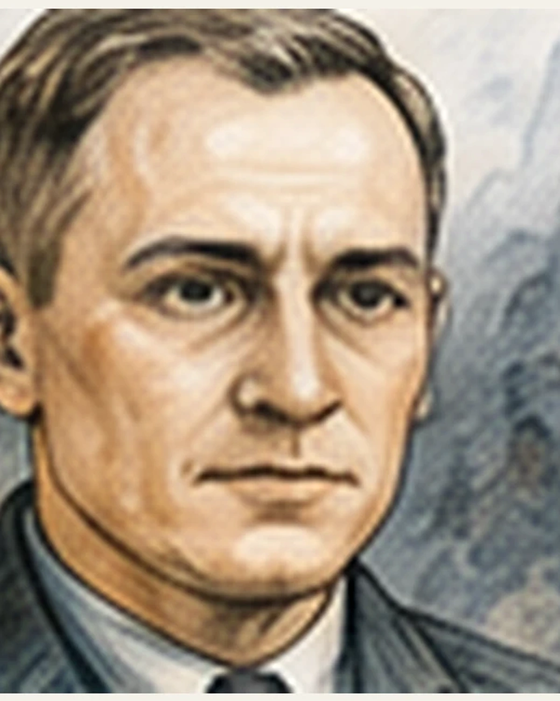
III
Antiapartheid y derechos civiles
Steve Biko Abrir perfil
Sudáfrica · 1946–1977
Steve Biko fue un dirigente antiapartheid, cofundador de la South African Students’ Organisation y figura central del Movimiento de Conciencia Negra. El régimen del apartheid restringió sus movimientos y actividades políticas.
Fue detenido en agosto de 1977 y murió el 12 de septiembre de ese año por lesiones sufridas mientras estaba bajo custodia policial. El traslado de Biko gravemente herido desde Gqeberha hasta Pretoria y la atención médica recibida forman parte de la investigación histórica y judicial del caso.
Responsabilidad estatal: la muerte por lesiones bajo custodia de la Security Police está establecida. La Comisión de Verdad y Reconciliación negó la amnistía a los policías implicados porque no acreditaron un objetivo político amnistiable ni hicieron una revelación completa. En 2025 se reabrió la investigación judicial para determinar responsabilidades penales individuales; por eso el perfil no presenta esa atribución como definitivamente cerrada.
Legado: Biko es una figura central de la historia del Movimiento de Conciencia Negra y de la resistencia al apartheid.
Nota de verificación: La muerte bajo custodia y las lesiones están establecidas. La Comisión de Verdad negó amnistía a los policías por falta de revelación completa. Una nueva investigación judicial fue reabierta en 2025, por lo que no debe presentarse como cerrada la responsabilidad penal individual.
Fuentes verificadas
- Departamento de Justicia y Desarrollo Constitucional de SudáfricaRe-opened inquest into the death of Mr Stephen Bantu Biko (2025).Consultar fuente
- Truth and Reconciliation Commission of South AfricaAmnesty Committee Decision AC/99/0020 (1999).Consultar fuente
- Truth and Reconciliation Commission of South AfricaAmnesty decision on death of Steve Biko (1999).Consultar fuente
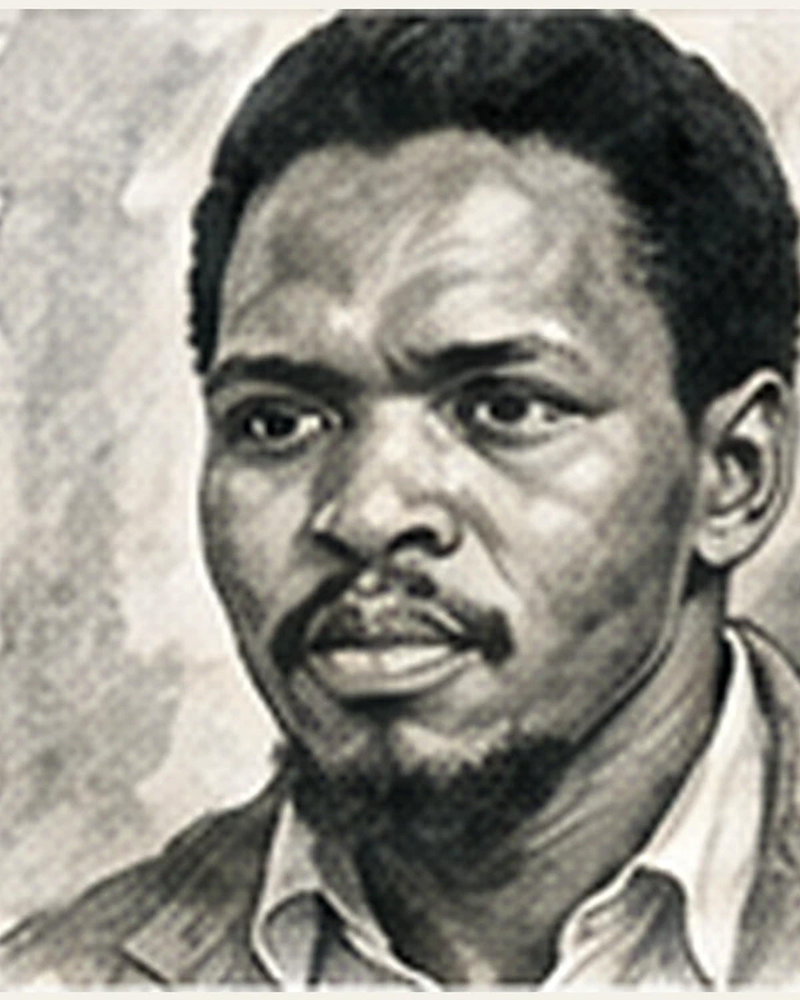
Fred Hampton Abrir perfil
Estados Unidos · 1948–1969
Joven y carismático líder del Partido Pantera Negra en Illinois, Fred Hampton organizó programas comunitarios —desayunos gratuitos para niños, clínicas de salud, educación política— y logró articular una "coalición arcoíris" que unía a grupos de distintas razas en torno a demandas sociales comunes. Su capacidad de liderazgo lo situó en la mira del FBI.
En la madrugada del 4 de diciembre de 1969, agentes de policía de Chicago irrumpieron en su apartamento y lo mataron mientras dormía, junto a otro militante, Mark Clark.
Responsabilidad estatal: directa. Fred Hampton murió durante una redada de la policía de Chicago. Archivos federales documentan que un informante del FBI infiltró su organización y proporcionó información usada en el operativo.
Legado: símbolo de la represión estatal contra el activismo negro en Estados Unidos y del uso del aparato de inteligencia contra disidentes internos.
Nota de verificación: Las fuentes federales documentan la infiltración del FBI, la entrega del plano del apartamento y el operativo de la policía de Chicago. Se evita atribuir a una sola institución toda la cadena de decisión sin precisar niveles.
Fuentes verificadas
- National Archives and Records AdministrationFred Hampton (August 30, 1948–December 4, 1969) (2021).Consultar fuente
- Federal Bureau of InvestigationThe Vault: Black Panther Party (2026).Consultar fuente
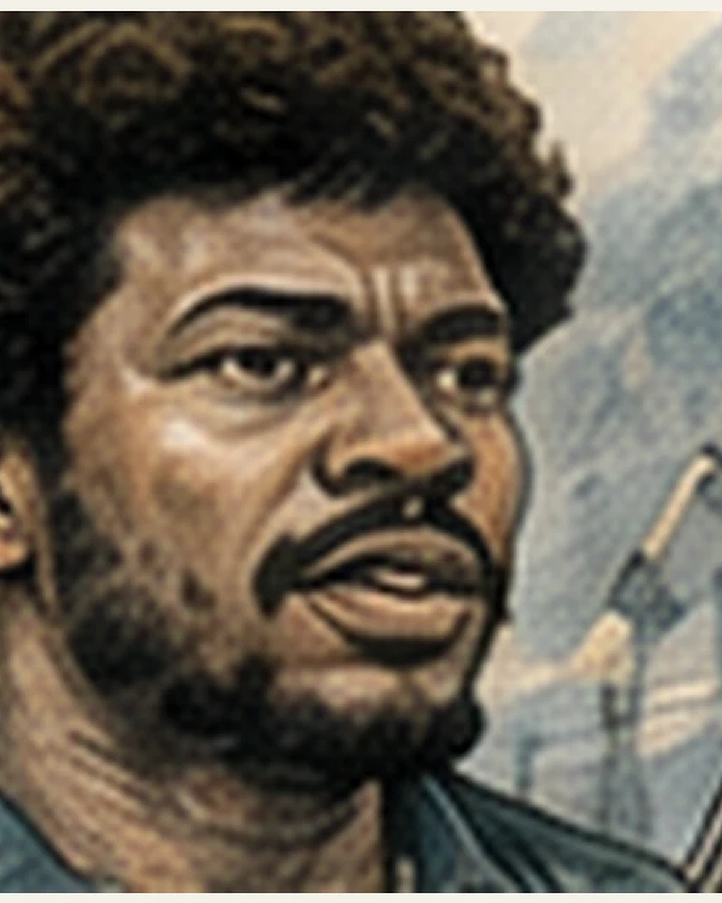
James Chaney, Andrew Goodman y Michael Schwerner Abrir perfil
Estados Unidos · 1964 (caso colectivo)
Tres jóvenes activistas por los derechos civiles —James Chaney, afroamericano de Misisipi de 21 años; Andrew Goodman, estudiante neoyorquino de 20; y Michael "Mickey" Schwerner, trabajador social neoyorquino de 24— participaban en el "Freedom Summer" de 1964, una campaña para registrar votantes afroamericanos en el sur segregado. Investigaban el incendio de una iglesia usada para reuniones del movimiento cuando desaparecieron.
El 21 de junio de 1964 fueron detenidos con un pretexto de tránsito por el subsheriff Cecil Price, retenidos el tiempo suficiente para que se organizara una emboscada del Ku Klux Klan, liberados y luego perseguidos, asesinados y enterrados en un dique de tierra. Sus cuerpos aparecieron seis semanas después.
Responsabilidad estatal: complicidad directa. El subsheriff Cecil Price detuvo a los tres activistas y participó en la conspiración con miembros del Ku Klux Klan que culminó en su asesinato.
Legado: el crimen conmocionó a Estados Unidos y aceleró la aprobación de la legislación de derechos civiles.
Nota de verificación: La participación del subsheriff Cecil Price y las condenas federales están establecidas judicialmente.
Fuentes verificadas
- Federal Bureau of InvestigationMississippi Burning (2026).Consultar fuente
- United States Department of JusticeJustice Department commemorates Mississippi Burning case (2014).Consultar fuente
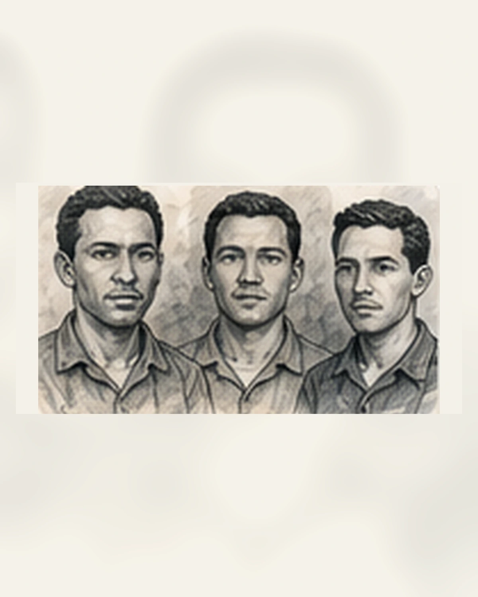
IV
Soberanía nacional y anticolonialismo
Thomas Sankara Abrir perfil
Burkina Faso · 1949–1987
Capitán del ejército y presidente de Burkina Faso entre 1983 y 1987, Thomas Sankara encarnó un proyecto radical de soberanía panafricana. Rebautizó el país —de Alto Volta a Burkina Faso, "tierra de hombres íntegros"—, rechazó la tutela del FMI y de Francia, impulsó campañas de vacunación y alfabetización, promovió los derechos de las mujeres y denunció el peso de la deuda externa sobre África. Vivía con austeridad deliberada y era conocido como el "Che Guevara africano".
El 15 de octubre de 1987 fue asesinado junto a varios colaboradores en un golpe de Estado encabezado por su antiguo compañero de armas, Blaise Compaoré.
Responsabilidad estatal: directa y judicialmente establecida en el ámbito nacional. Un tribunal militar de Burkina Faso condenó a Blaise Compaoré, Gilbert Diendéré y otros implicados por el asesinato de Thomas Sankara y sus compañeros.
Legado: ícono del anticolonialismo y de la soberanía africana, su figura resurge continuamente en las luchas del continente.
Nota de verificación: El tribunal militar de Burkina Faso condenó en 2022 a Blaise Compaoré y otros acusados. No se incluye como hecho probado una intervención extranjera específica que no haya sido establecida en la sentencia.
Fuentes verificadas
- Thomas Sankara Website — archivo oficial del procesoVerdict complet du procès de Thomas Sankara et de ses compagnons (2022).Consultar fuente
- Comité de Derechos Humanos de Naciones UnidasSankara et al. v. Burkina Faso, CCPR/C/86/D/1159/2003 (2006).Consultar fuente
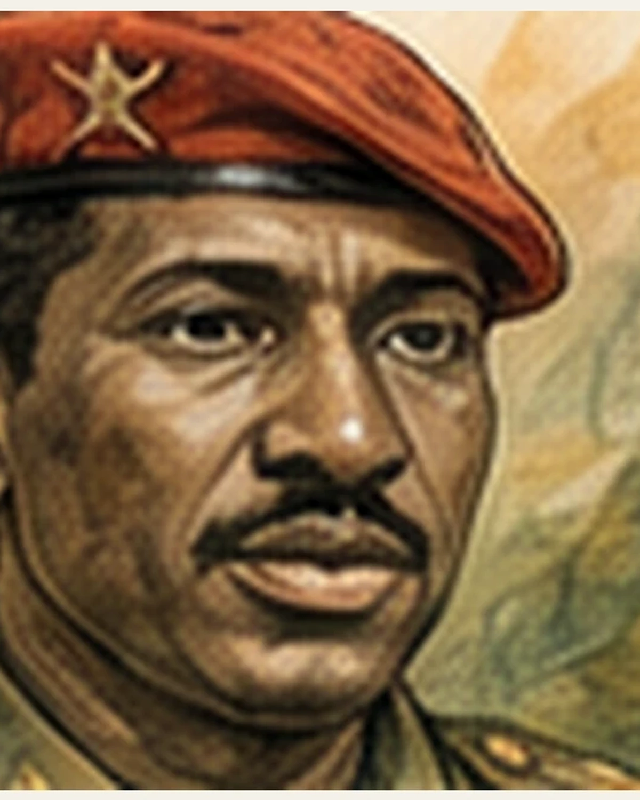
Patrice Lumumba Abrir perfil
Congo · 1925–1961
Primer ministro del Congo tras la independencia de Bélgica en 1960, Patrice Lumumba defendió la soberanía plena de su país frente al neocolonialismo y las potencias occidentales interesadas en los recursos congoleños. Su discurso de independencia, que denunció sin rodeos los abusos coloniales, lo convirtió en un enemigo para Bélgica y para Estados Unidos en plena Guerra Fría.
Depuesto en medio de una crisis política y una secesión provincial, fue capturado, torturado y ejecutado el 17 de enero de 1961. Su cuerpo fue disuelto en ácido para hacerlo desaparecer.
Responsabilidad estatal: participación y responsabilidad política documentadas, con salvedad. La comisión parlamentaria belga estableció que autoridades y asesores belgas contribuyeron al traslado de Lumumba a Katanga, donde fue ejecutado, y atribuyó responsabilidad moral a Bélgica. La responsabilidad penal individual continúa en examen.
Legado: mártir de la independencia africana y símbolo de la injerencia extranjera en el continente.
Nota de verificación: La comisión parlamentaria belga concluyó responsabilidad moral y política, no una orden gubernamental directa de asesinato. En marzo de 2026 un tribunal ordenó llevar a juicio a un exdiplomático por su presunta participación; el proceso no equivale a condena.
Fuentes verificadas
- Chambre des représentants de BelgiqueCommission d’enquête sur l’assassinat de Patrice Lumumba (2001).Consultar fuente
- ReutersBelgium orders ex-diplomat to stand trial for 1961 murder of Congo’s Lumumba (2026).Consultar fuente
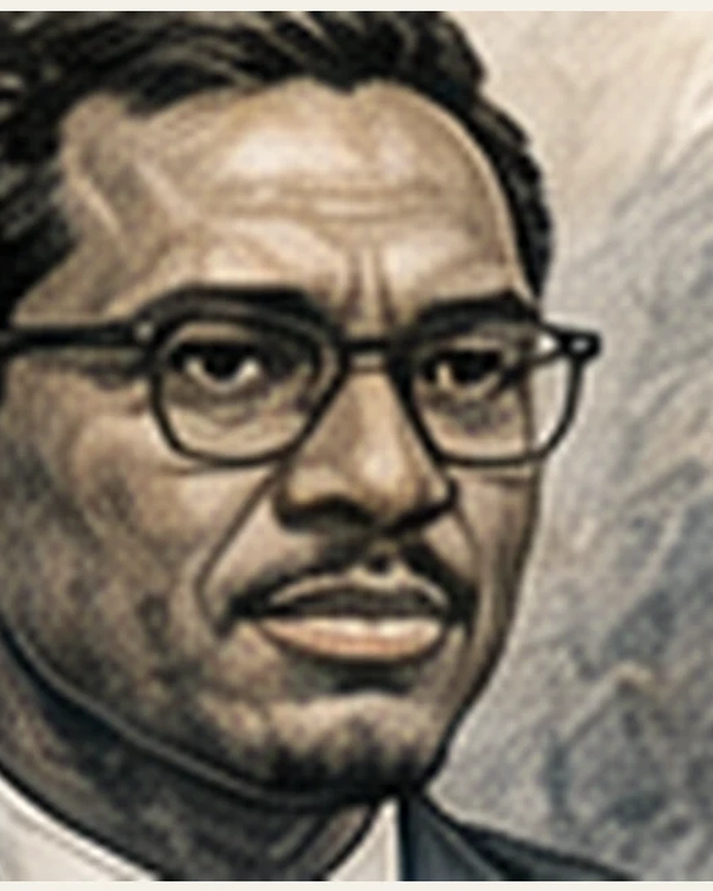
Mehdi Ben Barka Abrir perfil
Marruecos / Francia · 1920–1965
Matemático de formación y líder de la izquierda marroquí, Mehdi Ben Barka fue una figura destacada del anticolonialismo y del movimiento tercermundista. Opositor del rey Hassan II, presidía la comisión organizadora de la Conferencia Tricontinental que reuniría a los movimientos de liberación de Asia, África y América Latina. Condenado a muerte en ausencia por Marruecos, vivía en el exilio.
El 29 de octubre de 1965 fue secuestrado en pleno París, frente a la brasserie Lipp, por policías franceses. Nunca reapareció; se cree que fue torturado hasta la muerte y su cuerpo hecho desaparecer.
Responsabilidad estatal: participación de agentes estatales documentada, con salvedad. Policías franceses participaron en el secuestro de Mehdi Ben Barka y la investigación ha examinado la intervención de servicios marroquíes; su destino final y la cadena completa de mando no han sido esclarecidos.
Legado: su desaparición es uno de los grandes crímenes de Estado no resueltos del siglo XX y símbolo de la represión transnacional.
Nota de verificación: El cuerpo nunca fue hallado y la instrucción sigue abierta. Se evita afirmar como certeza judicial la forma exacta de muerte o una orden oficial de ambos gobiernos.
Fuentes verificadas
- Assemblée nationale françaiseJustice pour Mehdi Ben Barka — question écrite n°2312 (2025).Consultar fuente
- Institut national de l’audiovisuelAffaire Ben Barka (2026).Consultar fuente
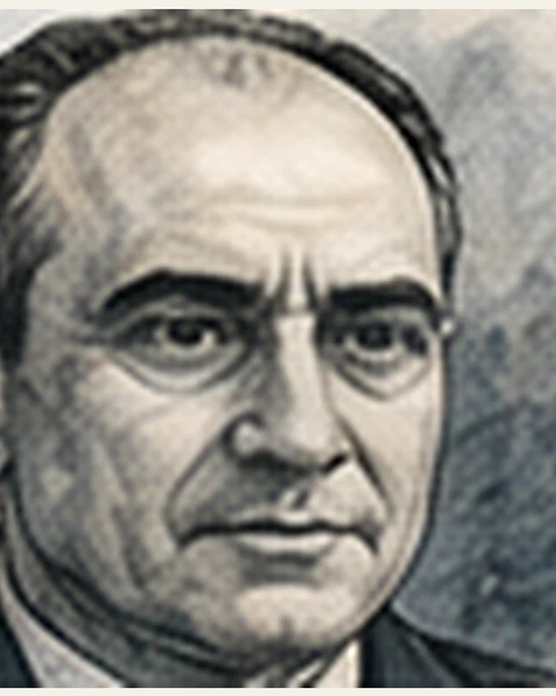
Salvador Allende Abrir perfil
Chile · 1908–1973
Médico y político socialista, Salvador Allende fue el primer presidente marxista en llegar al poder por vía electoral en América Latina, en 1970. Su gobierno de Unidad Popular impulsó la nacionalización del cobre, la reforma agraria y programas de justicia social, en medio de una fuerte polarización interna y de la hostilidad de Estados Unidos.
El 11 de septiembre de 1973 un golpe militar encabezado por Augusto Pinochet bombardeó el palacio de La Moneda. Allende, decidido a no rendirse ni exiliarse, murió ese día en el palacio.
Responsabilidad estatal: muerte durante un golpe militar, con salvedad. La investigación forense chilena concluyó que Allende se suicidó en La Moneda durante el asalto. Documentos oficiales estadounidenses acreditan acciones encubiertas para impedir y debilitar su gobierno, sin establecer una orden directa para causar su muerte.
Legado: símbolo mundial de la vía democrática al socialismo y de la intervención extranjera en América Latina.
Nota de verificación: La autopsia de 2011 confirmó suicidio. Los archivos oficiales estadounidenses documentan operaciones encubiertas contra el gobierno de Allende, pero no prueban una orden estadounidense para su muerte.
Fuentes verificadas
- Servicio Médico Legal de Chile / Poder JudicialInforme pericial sobre la muerte de Salvador Allende (2011).Consultar fuente
- U.S. Department of State, Office of the HistorianForeign Relations of the United States, Chile, 1969–1973 (2014).Consultar fuente
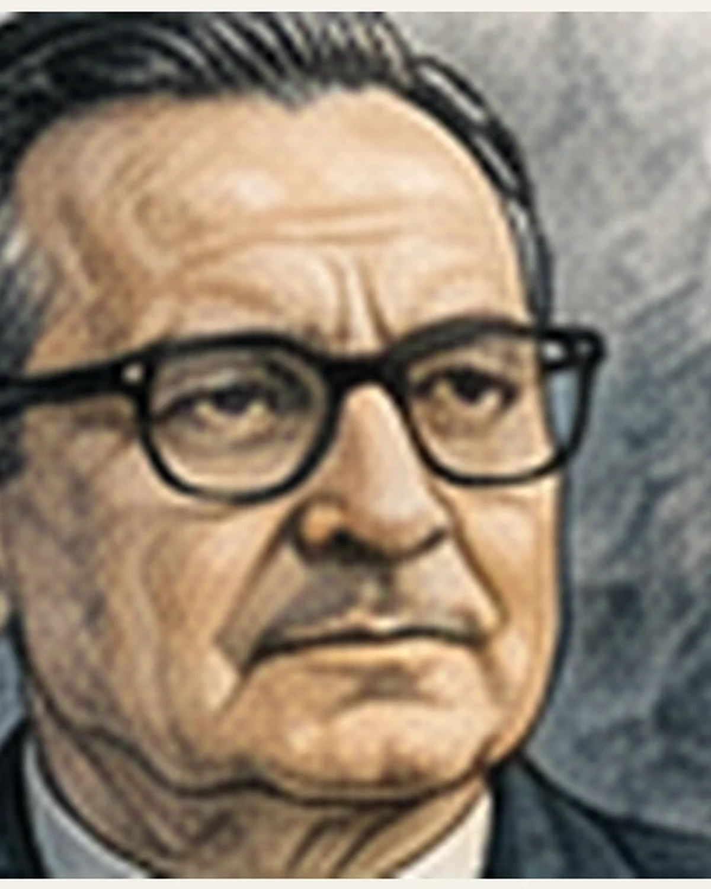
V
Naturaleza, derechos indígenas y ambientales
Ken Saro-Wiwa Abrir perfil
Nigeria · 1941–1995
Escritor, productor de televisión y activista, Ken Saro-Wiwa lideró el Movimiento para la Supervivencia del Pueblo Ogoni (MOSOP), que denunció la devastación ambiental causada por la explotación petrolera —en particular de Shell— en el delta del Níger, y reclamó justicia y derechos para su pueblo. Su campaña pacífica logró proyección internacional.
Detenido bajo el régimen militar de Sani Abacha, fue juzgado por un tribunal especial en un proceso ampliamente denunciado como fraudulento y ahorcado el 10 de noviembre de 1995 junto a otros ocho activistas ogoni.
Responsabilidad estatal: directa. Ken Saro-Wiwa y ocho coacusados fueron ejecutados por el Estado nigeriano después de un proceso que Naciones Unidas calificó de defectuoso y una ejecución que condenó como arbitraria.
Legado: figura pionera de la justicia ambiental ligada a los derechos de los pueblos, y símbolo de la resistencia frente al poder petrolero.
(Berta Cáceres también pertenece a este eje — ver sección I.)
Nota de verificación: La Asamblea General de la ONU calificó la ejecución de arbitraria y el proceso de defectuoso.
Fuentes verificadas
- Asamblea General de las Naciones UnidasA/RES/50/199. Situation of human rights in Nigeria (1995).Consultar fuente
- Amnesty International15th anniversary of the execution of Ken Saro-Wiwa and the Ogoni leaders (2010).Consultar fuente
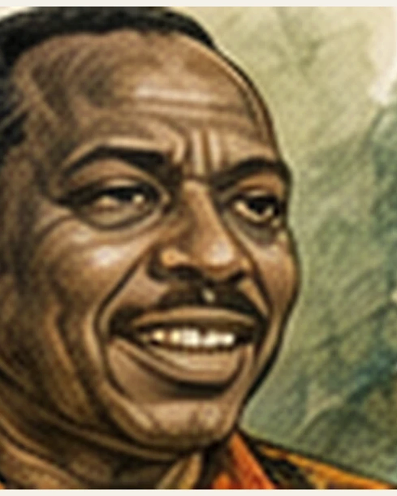
VI
Libertad de expresión, disidencia y resistencia
Jamal Khashoggi Abrir perfil
Arabia Saudita / Turquía · 1958–2018
Periodista saudí de larga trayectoria, columnista del Washington Post y antiguo hombre cercano al poder en Riad, Jamal Khashoggi se convirtió en crítico del autoritarismo del príncipe heredero Mohamed bin Salmán. Desde el exilio, defendió la libertad de prensa y la reforma en el mundo árabe.
El 2 de octubre de 2018 entró al consulado saudí en Estambul para tramitar documentos de su boda y no volvió a salir. Fue asesinado y descuartizado por un escuadrón de agentes saudíes.
Responsabilidad estatal: directa, con salvedad sobre la autoría intelectual individual. La investigación de la Relatora Especial de Naciones Unidas concluyó que Khashoggi fue víctima de una ejecución deliberada y premeditada de la que el Estado saudí es responsable.
Legado: su caso es emblema global de la persecución a periodistas y de la represión transnacional de la disidencia.
Nota de verificación: La Relatora Especial de la ONU concluyó que fue una ejecución deliberada y premeditada por la que Arabia Saudita es responsable. La atribución penal a personas de la cúpula requiere investigación judicial independiente.
Fuentes verificadas
- Relatora Especial de Naciones Unidas sobre ejecuciones extrajudicialesA/HRC/41/36: Investigation into the unlawful death of Jamal Khashoggi (2019).Consultar fuente
- Office of the High Commissioner for Human RightsKhashoggi killing: UN expert calls for international investigation (2019).Consultar fuente
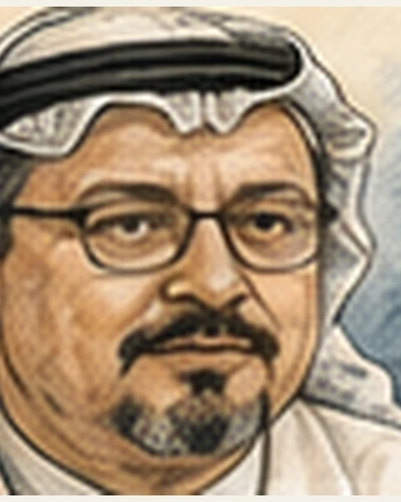
Hrant Dink Abrir perfil
Turquía · 1954–2007
Periodista turco de origen armenio, Hrant Dink fundó y dirigió el semanario Agos y trabajó por la reconciliación entre turcos y armenios y por la memoria del genocidio armenio, un tema tabú en Turquía. Fue procesado por "insultar la identidad turca" y recibió numerosas amenazas de muerte.
El 19 de enero de 2007 fue asesinado a tiros frente a la sede de su periódico por un joven ultranacionalista.
Responsabilidad estatal: por negligencia y fallos de protección. El Tribunal Europeo de Derechos Humanos concluyó que Turquía violó el derecho a la vida al no actuar frente a información que permitía prever el asesinato y al no investigar adecuadamente la actuación de agentes estatales.
Legado: su asesinato marcó un punto de inflexión en Turquía; su funeral reunió a decenas de miles bajo el lema "Todos somos Hrant Dink".
Nota de verificación: La responsabilidad es por violación del derecho a la vida, omisión de protección y fallos investigativos, no por autoría material estatal establecida en la sentencia europea.
Fuentes verificadas
- European Court of Human RightsDink v. Turkey (2010).Consultar fuente
- Ministerio de Relaciones Exteriores de TurquíaHrant Dink Davası Hk. (2010).Consultar fuente
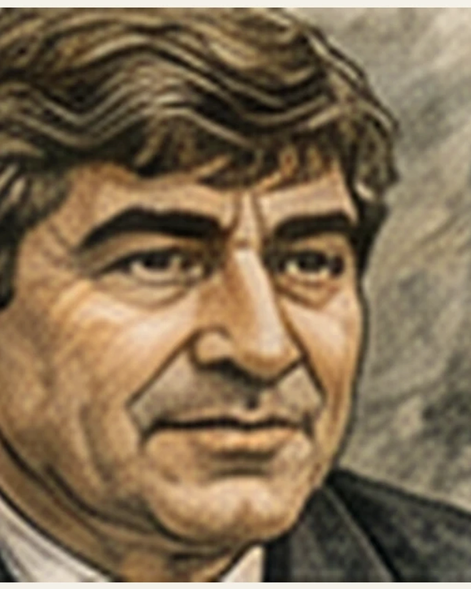
Rodolfo Walsh Abrir perfil
Argentina · 1927–1977
Escritor y periodista, Rodolfo Walsh es considerado pionero del periodismo de investigación en América Latina con obras como Operación Masacre. Durante la última dictadura militar argentina militó en la resistencia y documentó los crímenes del régimen. El 24 de marzo de 1977, en el primer aniversario del golpe, difundió su "Carta Abierta de un Escritor a la Junta Militar", un texto que denunciaba con precisión el terrorismo de Estado.
Al día siguiente fue emboscado por un grupo de tareas de la Marina, herido y desaparecido. Su cuerpo nunca fue entregado.
Responsabilidad estatal: directa. Rodolfo Walsh fue atacado y secuestrado por un grupo de tareas vinculado a la ESMA y permanece desaparecido; estos hechos forman parte de las causas por crímenes de lesa humanidad.
Legado: símbolo del periodismo comprometido y de los desaparecidos de la dictadura argentina; su Carta Abierta es un documento fundacional de la memoria.
Nota de verificación: La documentación estatal argentina identifica el secuestro por un grupo de tareas y su condición de desaparecido.
Fuentes verificadas
- Argentina.gob.arRodolfo Walsh, con la vigencia de siempre, 45 años después (2022).Consultar fuente
- Subsecretaría de Derechos Humanos de la Provincia de Buenos AiresWalsh, Rodolfo Jorge (2026).Consultar fuente
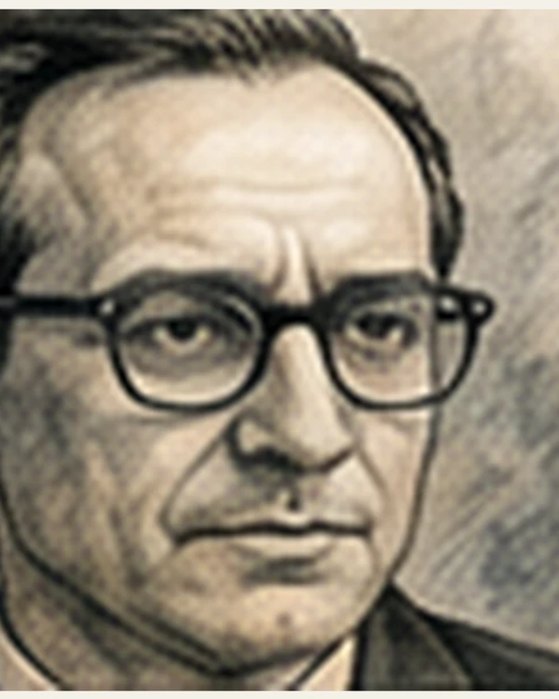
Alekos Panagulis Abrir perfil
Grecia · 1939–1976
Poeta y militante de la resistencia contra la dictadura de los coroneles en Grecia, Alekos Panagulis fue detenido en 1968 tras un intento fallido de asesinar al dictador Georgios Papadopoulos. En cautiverio fue torturado de forma sistemática y brutal por la policía militar, y aun así no delató a sus compañeros. Condenado a muerte, la presión internacional evitó su ejecución. Liberado en un canje y tras la caída de la junta, fue elegido diputado democrático.
Murió el 1 de mayo de 1976 en un accidente de tráfico, días antes de revelar archivos que incriminaban a figuras de la transición vinculadas a la junta.
Responsabilidad estatal: tortura documentada. Panagulis fue detenido, condenado a muerte por un tribunal militar y sometido a tortura durante la dictadura. Su muerte en un accidente de tráfico en 1976 generó sospechas, pero no fue probada judicialmente como asesinato.
Salvedades: su muerte es ampliamente sospechada de ser un asesinato para silenciarlo, pero nunca se probó. Además, su intento de magnicidio lo sitúa en la frontera del criterio de "no combatiente", aunque su perfil global —poeta, torturado, diputado— lo acerca a la resistencia civil.
Legado: símbolo de la dignidad frente a la tortura y de la resistencia griega a la dictadura.
Nota de verificación: La tortura y la condena militar están documentadas. La hipótesis de que el accidente de 1976 fue provocado no se presenta como hecho.
Fuentes verificadas
- ERT — Archivo de la radiotelevisión pública griegaΑλέκος Παναγούλης — 1 Μαΐου 1976 (2018).Consultar fuente
- Sistema Informativo Unificato per le Soprintendenze Archivistiche, ItaliaPanagulis Alexandros (2026).Consultar fuente
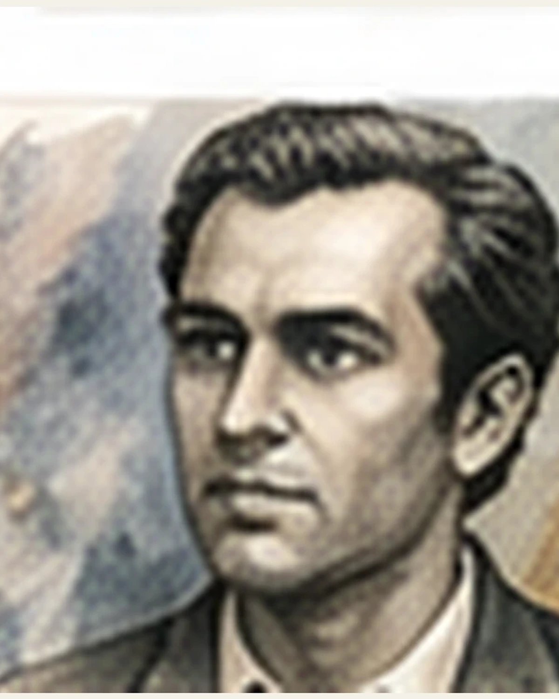
VII
Resistencia religiosa y derechos humanos desde la fe
Óscar Romero Abrir perfil
El Salvador · 1917–1980
Arzobispo de San Salvador, Óscar Romero se transformó, a partir del asesinato de sacerdotes cercanos, en la voz más firme contra la represión y la pobreza en El Salvador. Desde sus homilías dominicales, escuchadas en todo el país, denunciaba los crímenes del régimen y defendía a los pobres. Un día antes de morir suplicó a los soldados que dejaran de reprimir al pueblo: "En nombre de Dios… cese la represión".
El 24 de marzo de 1980 fue asesinado de un disparo mientras oficiaba misa en la capilla de un hospital.
Responsabilidad estatal: directa y por complicidad. La Comisión Interamericana concluyó que agentes estatales y estructuras vinculadas a escuadrones de la muerte participaron en su ejecución extrajudicial y que el Estado no investigó ni sancionó adecuadamente.
Legado: canonizado en 2018, es santo de la Iglesia católica y símbolo universal de la opción por los pobres y de la resistencia frente al terror de Estado.
Nota de verificación: La CIDH declaró responsabilidad internacional de El Salvador y la Comisión de la Verdad identificó la planificación del crimen.
Fuentes verificadas
- Comisión Interamericana de Derechos HumanosReport No. 37/00, Case 11.481, Monsignor Oscar Arnulfo Romero (2000).Consultar fuente
- Comisión de la Verdad para El Salvador / Naciones UnidasFrom Madness to Hope: The 12-Year War in El Salvador (1993).Consultar fuente
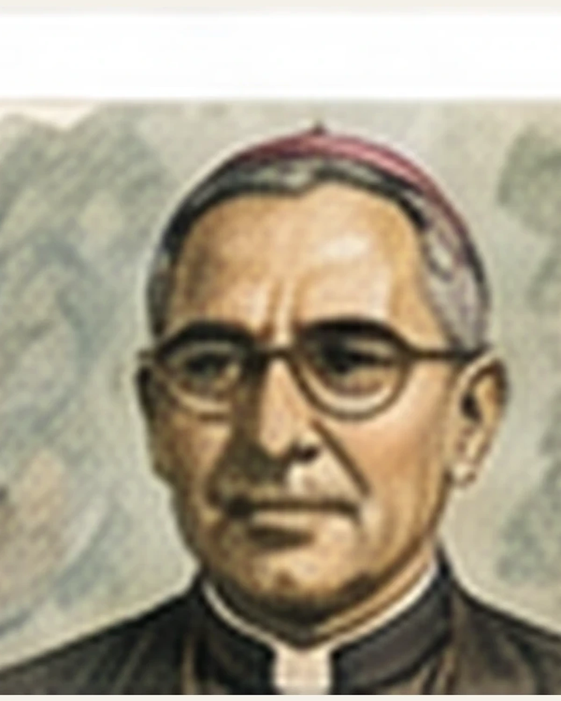
Religiosas de Maryknoll Abrir perfil
El Salvador · 1980 · Ita Ford, Maura Clarke, Dorothy Kazel y Jean Donovan (caso colectivo)
Tres monjas estadounidenses —Ita Ford, Maura Clarke y Dorothy Kazel— y la misionera laica Jean Donovan trabajaban con los pobres y los refugiados de la guerra civil salvadoreña, distribuyendo ayuda y acompañando a las víctimas de la represión. Ita Ford había llegado a El Salvador el día del funeral de Óscar Romero.
El 2 de diciembre de 1980 fueron secuestradas al salir del aeropuerto, torturadas, violadas y asesinadas por agentes de la Guardia Nacional. Sus cuerpos aparecieron dos días después en una fosa.
Responsabilidad estatal: directa. La Comisión de la Verdad para El Salvador concluyó que miembros de la Guardia Nacional detuvieron, violentaron sexualmente y asesinaron a las cuatro religiosas y misioneras, y documentó encubrimientos y fallos de investigación.
Legado: su asesinato conmocionó a la opinión pública estadounidense y expuso la brutalidad del régimen salvadoreño respaldado por Washington.
Nota de verificación: La Comisión de la Verdad de Naciones Unidas documentó el arresto y asesinato por miembros de la Guardia Nacional y la obstrucción posterior.
Fuentes verificadas
- Comisión de la Verdad para El Salvador / Naciones UnidasThe American Churchwomen — Report of the Commission on the Truth for El Salvador (1993).Consultar fuente
- United States Department of JusticeFord v. Garcia litigation record (2000).Consultar fuente
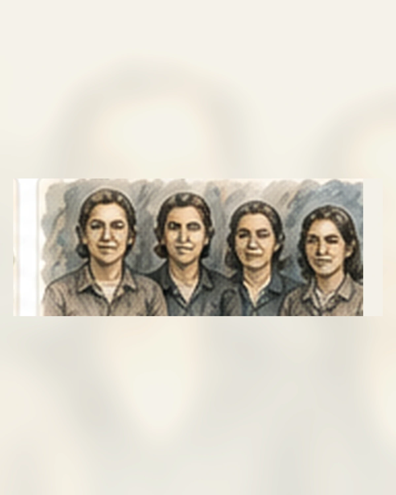
Frei Tito de Alencar Lima Abrir perfil
Brasil · 1945–1974
Fraile dominico ligado a la teología de la liberación, Frei Tito participó en la resistencia estudiantil y católica contra la dictadura militar brasileña. Detenido en 1969 junto a otros dominicos, fue torturado de forma sistemática por la policía política en el marco de la Operación Bandeirante —descargas eléctricas, golpes, tortura física y psicológica sostenida—. En el límite de su resistencia intentó suicidarse en prisión.
Liberado en un canje de presos y exiliado en Francia, nunca logró liberarse de las secuelas: las visiones recurrentes de sus torturadores lo persiguieron hasta que se quitó la vida el 10 de agosto de 1974, a los 28 años.
Responsabilidad estatal: tortura documentada. Frei Tito fue sometido a tortura física y psicológica por órganos represivos de la dictadura brasileña. Fuentes públicas vinculan las secuelas de ese trato con su suicidio en el exilio.
Salvedad: los militares lo acusaron de vínculos con la lucha armada, parte del montaje represivo; su rol propio fue de resistencia civil.
Legado: São Paulo renombró en su honor una calle que antes llevaba el nombre de su torturador. Es símbolo de las víctimas de la tortura de Estado en Brasil.
Nota de verificación: La tortura está documentada por órganos estatales brasileños. El vínculo con el suicidio se presenta como nexo histórico y testimonial reconocido, no como sentencia penal específica.
Fuentes verificadas
- Comissão Especial sobre Mortos e Desaparecidos Políticos, BrasilFrei Tito de Alencar Lima (2004).Consultar fuente
- Assembleia Legislativa do Estado de São PauloBiografia de Frei Tito é lançada em reunião da Comissão estadual da Verdade (2014).Consultar fuente
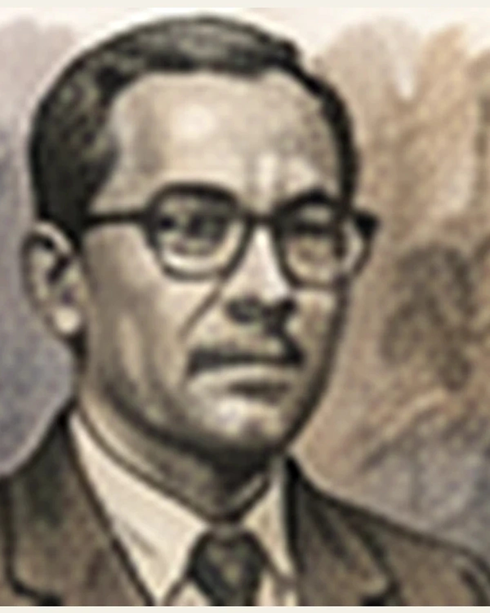
Janani Luwum Abrir perfil
Uganda · 1922–1977
Arzobispo anglicano de Uganda y uno de los líderes eclesiásticos más influyentes de África, Janani Luwum se convirtió en crítico frontal de las ejecuciones arbitrarias y desapariciones del régimen de Idi Amin. En febrero de 1977 entregó una nota de protesta formal contra la violencia del gobierno.
Poco después fue arrestado bajo acusaciones fabricadas de traición y asesinado el 16 de febrero de 1977. El gobierno afirmó que había muerto en un accidente de tránsito, pero al abrir el ataúd su cuerpo apareció acribillado.
Responsabilidad estatal: directa, con base en reconocimiento histórico oficial. Janani Luwum fue detenido y asesinado después de denunciar ejecuciones y desapariciones del régimen de Idi Amin; la versión oficial de un accidente fue posteriormente desacreditada.
Legado: reconocido como uno de los diez mártires cristianos del siglo XX, tiene un día conmemorativo nacional en Uganda y una estatua en la fachada de la Abadía de Westminster.
Nota de verificación: El Estado ugandés y fuentes históricas eclesiásticas reconocen que fue asesinado después de denunciar abusos del régimen. No existe una sentencia penal contemporánea que individualice toda la cadena.
Fuentes verificadas
- State House UgandaPresident Museveni Honors Archbishop Janani Luwum’s Martyrdom (2026).Consultar fuente
- Dictionary of African Christian BiographyLuwum, Janani Jakaliya (2026).Consultar fuente
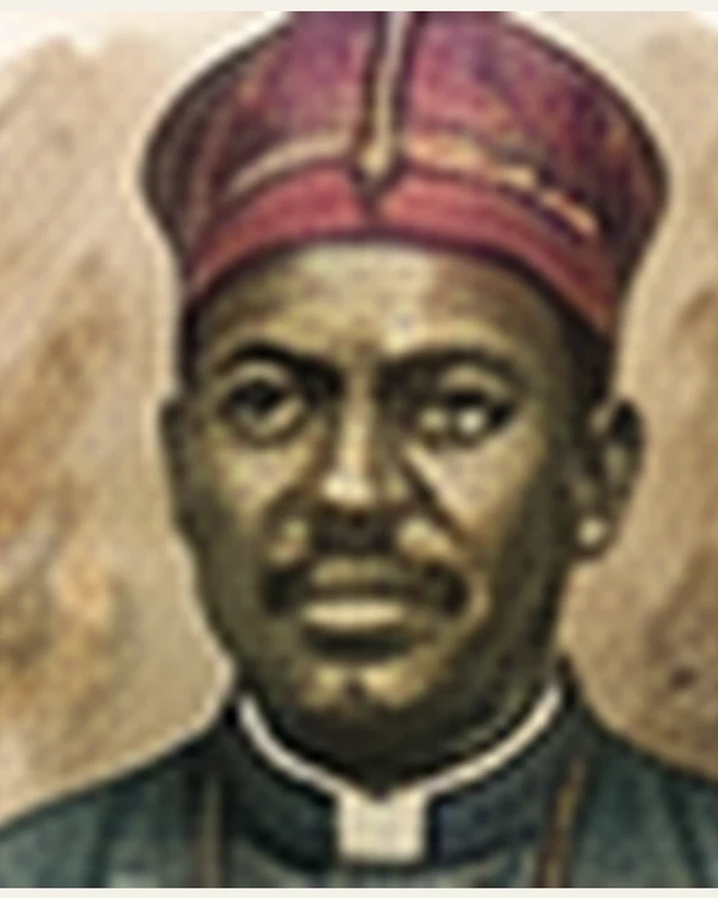
VIII
Resistencia cultural, antifascista y obrera
Rosa Luxemburgo Abrir perfil
Alemania · 1871–1919
Teórica marxista, economista y una de las voces más brillantes del movimiento obrero europeo, Rosa Luxemburgo defendió los derechos de los trabajadores y una concepción democrática del socialismo, en debate incluso con Lenin. Cofundó el Partido Comunista de Alemania (KPD) y fue figura central de la Liga Espartaquista durante la revolución alemana de 1918-1919.
Tras el aplastamiento del levantamiento de enero de 1919, fue detenida junto a Karl Liebknecht, llevada al Hotel Eden, torturada y asesinada el 15 de enero de 1919. Su cuerpo fue arrojado a un canal de Berlín.
Responsabilidad estatal: asesinato por fuerzas paramilitares empleadas por el gobierno, con salvedad sobre la orden política específica. Miembros de la Garde-Kavallerie-Schützen-Division asesinaron a Rosa Luxemburgo después de que el gobierno utilizara fuerzas militares y Freikorps para reprimir el levantamiento.
Salvedad: los Freikorps eran paramilitares con respaldo estatal, no ejército regular; la cadena de mando hasta el gobierno está documentada.
Legado: ícono del pensamiento socialista democrático y de la lucha obrera y feminista; su asesinato marcó la ruptura entre socialdemocracia y comunismo.
Nota de verificación: El Bundesarchiv documenta a los autores materiales y el despliegue gubernamental de las fuerzas. Se evita afirmar como hecho cerrado que una orden expresa de asesinato proviniera del gabinete.
Fuentes verificadas
- Bundesarchiv, AlemaniaErmordung von Rosa Luxemburg und Karl Liebknecht (2026).Consultar fuente
- Deutsches Historisches MuseumFreikorps (2014).Consultar fuente
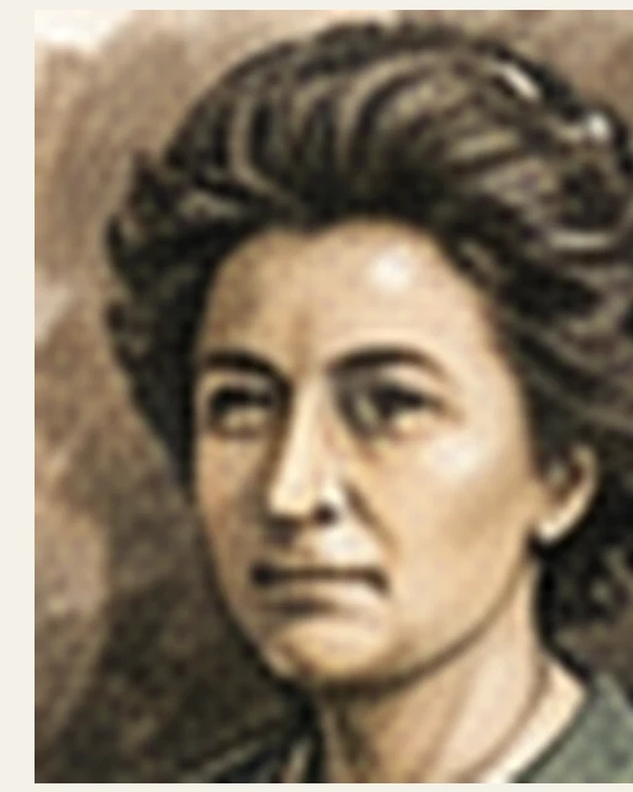
Federico García Lorca Abrir perfil
España · 1898–1936
Poeta y dramaturgo, una de las cumbres de la literatura española del siglo XX, Federico García Lorca encarnó una sensibilidad libre y progresista en la España de la Segunda República. No fue un activista organizado, pero su obra, su cercanía a la izquierda y su condición de homosexual lo convirtieron en blanco del odio de los sublevados al estallar la Guerra Civil.
En agosto de 1936, pocas semanas después del alzamiento franquista, fue detenido en Granada y fusilado. Sus restos nunca fueron hallados con certeza.
Responsabilidad estatal o paraestatal: ejecución por fuerzas vinculadas al alzamiento franquista, con salvedad sobre los responsables individuales y el móvil preciso. El Estado español lo reconoce dentro de la memoria de las víctimas del golpe, la guerra y la dictadura.
Legado: su asesinato es símbolo mundial de la represión cultural del fascismo y de las víctimas anónimas de la Guerra Civil española.
Nota de verificación: Se presenta como víctima de la represión franquista y se evita atribuir un móvil único o una cadena individual no establecida judicialmente.
Fuentes verificadas
- Ministerio de Cultura de EspañaLorca y el archivo. Memoria en movimiento (2026).Consultar fuente
- Gobierno de España — Memoria DemocráticaDeclaración de reconocimiento y reparación personal (2025).Consultar fuente
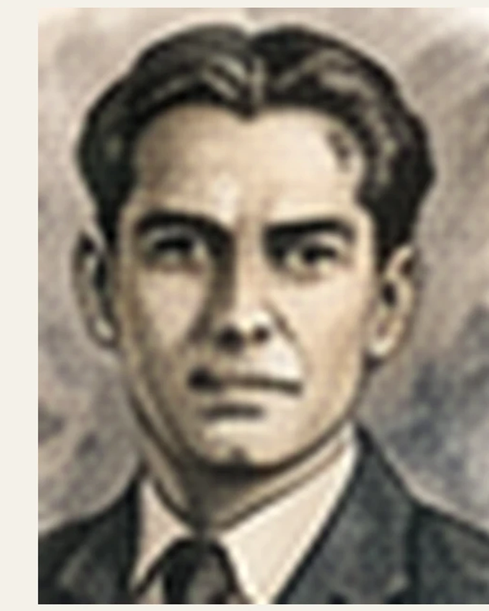
Víctor Jara Abrir perfil
Chile · 1932–1973
Cantautor, director teatral y militante, Víctor Jara fue una de las voces centrales de la Nueva Canción Chilena y un símbolo cultural del proyecto popular de Salvador Allende. Sus canciones daban voz a los trabajadores y a los pobres.
Tras el golpe del 11 de septiembre de 1973 fue detenido y llevado al Estadio Chile, convertido en centro de detención. Allí fue torturado y ejecutado con decenas de disparos.
Responsabilidad estatal: directa y judicialmente establecida. La Corte Suprema de Chile confirmó condenas contra militares retirados por el secuestro y homicidio calificados de Víctor Jara.
Legado: mártir de la cultura popular latinoamericana; el estadio donde lo mataron lleva hoy su nombre.
Nota de verificación: La Corte Suprema chilena ratificó condenas por secuestro y homicidio calificados.
Fuentes verificadas
- Biblioteca Nacional de Chile — Memoria ChilenaVíctor Jara: Su muerte (2026).Consultar fuente
- Corte Suprema de Chile / CooperativaCorte Suprema dictó sentencia definitiva por homicidio de Víctor Jara (2023).Consultar fuente
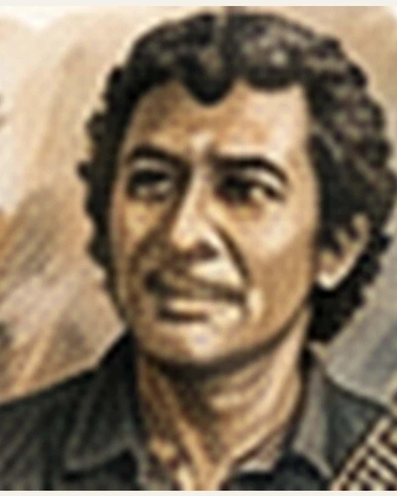
Orlando Letelier Abrir perfil
Chile / Estados Unidos · 1932–1976
Diplomático y ministro del gobierno de Allende, Orlando Letelier se convirtió en el exilio en una de las voces más eficaces contra la dictadura de Pinochet, denunciando sus crímenes y presionando para aislarla internacionalmente desde Washington.
El 21 de septiembre de 1976, un coche bomba lo mató en pleno Washington D.C., junto a su colaboradora estadounidense Ronni Moffitt.
Responsabilidad estatal: directa. El atentado con coche bomba fue organizado por la DINA, policía secreta de la dictadura chilena. Hubo condenas en Estados Unidos y Chile, y en 2026 se dictaron nuevas condenas por la muerte de Ronni Moffitt en el mismo ataque.
Legado: el caso —un acto de terrorismo de Estado en suelo estadounidense— fue decisivo para exponer la Operación Cóndor y la represión transnacional de las dictaduras del Cono Sur.
Nota de verificación: La autoría de la policía secreta chilena y las condenas en Estados Unidos y Chile están documentadas. La actualización incorpora nuevas condenas chilenas de 2026 relacionadas con el atentado.
Fuentes verificadas
- U.S. Department of State, Office of the HistorianAssassination of Orlando Letelier — Telegram 9212 (1976).Consultar fuente
- El País / resolución de ministra en visita chilenaCondenados tres exagentes de Pinochet por el atentado de Washington (2026).Consultar fuente
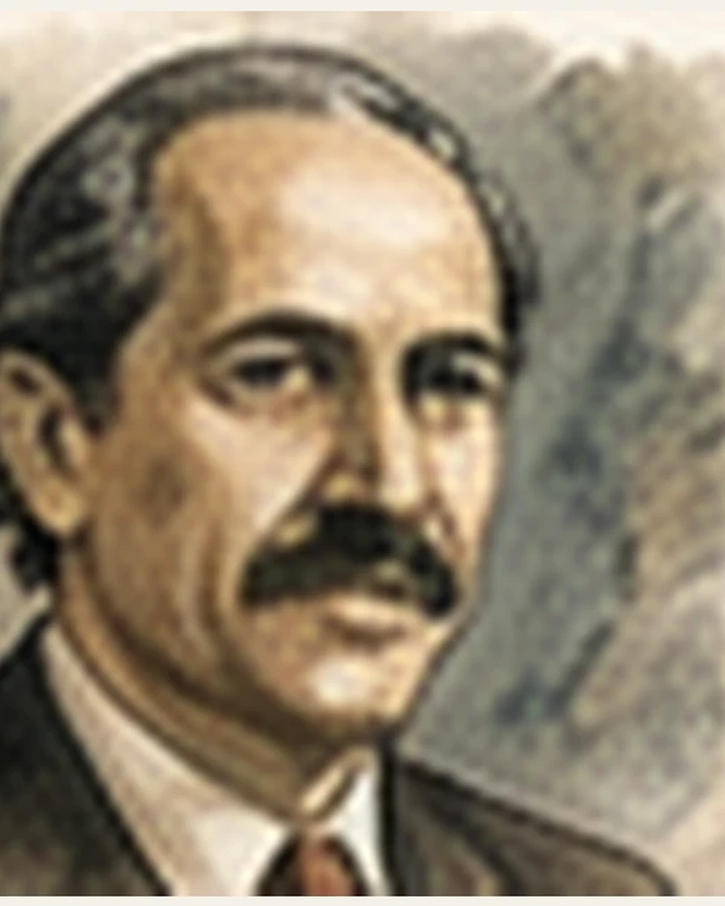
IX
Prensa y solidaridad en zona de conflicto
Rachel Corrie Abrir perfil
Estados Unidos / Palestina (Gaza) · 1979–2003
Activista estadounidense del Movimiento de Solidaridad Internacional, Rachel Corrie viajó a la Franja de Gaza para acompañar a la población palestina y oponerse pacíficamente a la demolición de viviendas. El 16 de marzo de 2003, en Rafah, murió a los 23 años aplastada por una excavadora blindada del ejército israelí mientras intentaba impedir la demolición de una casa, claramente identificada como civil con un chaleco naranja fluorescente.
Responsabilidad estatal: aparato militar implicado, con salvedad. Rachel Corrie murió al ser arrollada por un bulldozer militar israelí durante una operación. Un tribunal israelí rechazó la responsabilidad civil del Estado bajo la excepción de actividad de combate; organizaciones de derechos humanos cuestionaron la investigación y el fallo.
Legado: su diario y su historia (llevados al teatro en My Name Is Rachel Corrie) la convirtieron en símbolo internacional de la solidaridad civil con la causa palestina.
Nota de verificación: Se presentan conjuntamente el hecho material, la sentencia que eximió al Estado y las críticas a la investigación. No se afirma homicidio deliberado ni responsabilidad judicial establecida.
Fuentes verificadas
- Amnesty InternationalRachel Corrie verdict highlights impunity for Israeli military (2012).Consultar fuente
- Center for Constitutional RightsCorrie et al. v. Caterpillar (2007).Consultar fuente
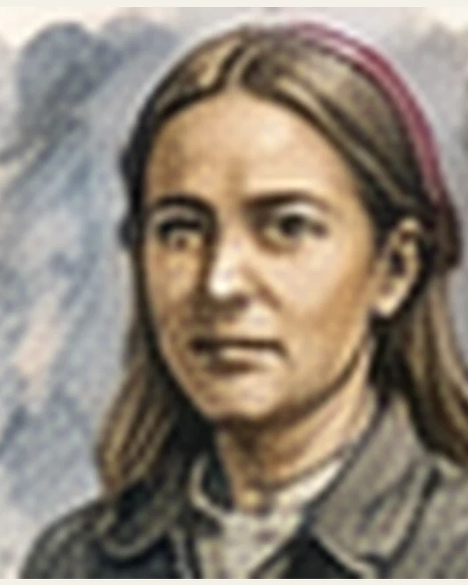
Shireen Abu Akleh Abrir perfil
Palestina / Estados Unidos · 1971–2022
Periodista veterana de Al Jazeera y una de las voces más respetadas del periodismo árabe, Shireen Abu Akleh cubrió durante más de dos décadas la realidad de la ocupación en los territorios palestinos, convirtiéndose en referente —especialmente como mujer periodista— para el público árabe y palestino. El 11 de mayo de 2022 recibió un disparo mortal en la cabeza mientras cubría una incursión militar israelí en el campo de refugiados de Yenín, en Cisjordania, llevando un chaleco con la palabra "PRENSA".
Responsabilidad estatal: aparato militar implicado, con salvedad. La Oficina de Derechos Humanos de Naciones Unidas concluyó que los disparos provenían de fuerzas israelíes. El ejército israelí reconoció una alta posibilidad de que un soldado la hubiera alcanzado accidentalmente, negó intencionalidad y no abrió investigación penal.
Legado: su muerte provocó conmoción internacional y se convirtió en símbolo de los riesgos que enfrenta la prensa en zonas de conflicto; su funeral en Jerusalén reunió a una multitud.
Nota de verificación: Se exponen las conclusiones divergentes: la ONU halló consistencia con disparos de fuerzas israelíes; la investigación militar israelí admitió alta probabilidad de fuego propio accidental y descartó abrir investigación penal.
Fuentes verificadas
- Office of the High Commissioner for Human RightsKilling of journalist in OPT — spokesperson statement (2022).Consultar fuente
- Israel Defense ForcesFinal Conclusions of Shireen Abu Akleh Investigation (2022).Consultar fuente
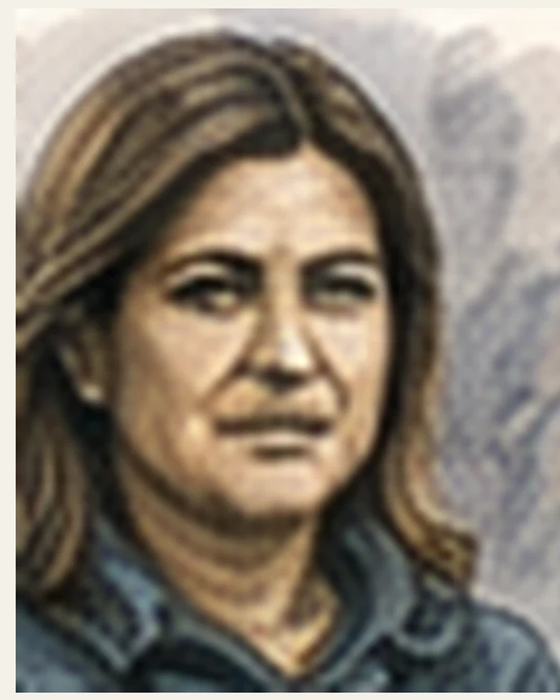